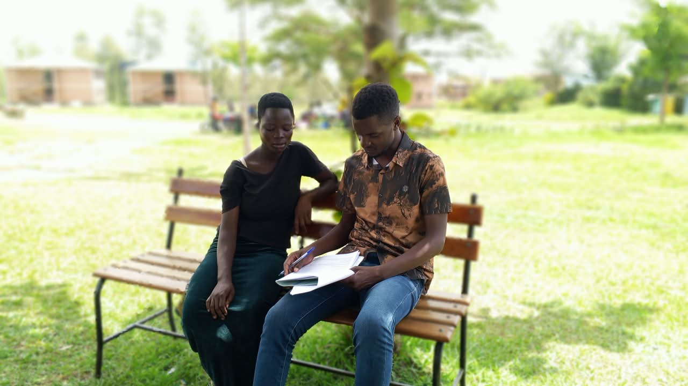

We Exist Because Young Parents Deserve Support.
Hope 4 Teen Parents Uganda (H4TPU) is a community-based health organisation at Mella Trading Center, Tororo District — established to bring accessible, respectful and youth-responsive health services, education, prevention, referral and supportive care to adolescents, young people and teenage parents.

How It All Began
Hope 4 Teen Parents Uganda (H4TPU) is a community-oriented health organisation based at Mella Trading Center, Tororo District. We were established to contribute to improved health and wellbeing by bringing essential health information, preventive services, basic clinical care, referrals and community support closer to people who face barriers accessing conventional health services.
We recognise that adolescents and young people require services that are accessible, respectful and appropriate to their stage of life. Teenage parents need an even broader response — they may simultaneously need health care, parenting information, psychosocial support, child health services, education guidance and protection from stigma and discrimination.
H4TPU therefore combines health service delivery with community engagement, working alongside existing health systems and referring clients requiring specialist services to appropriate public or private facilities.
Mission, Vision & Promise
Our Mission
To provide accessible, respectful and community-based health services, education, prevention, referral and supportive care — with particular attention to adolescents, young people and teenage parents.
Our Vision
Healthy, informed and empowered young people and teenage parents who can make responsible decisions, access timely health care and build healthier futures for themselves and their children.
Our Promise
We listen without judging. We provide accurate information. We protect your privacy. And when you need medical care, we connect you with a qualified health worker who can help.
Our Core Values
These values guide how we show up for every young parent we serve.
Respect & Dignity
Every young person is treated with dignity regardless of age, marital status, pregnancy, parenting status or background.
Confidentiality & Privacy
Client information is protected and accessed only by authorised personnel. Privacy is a core operational requirement.
Non-Discrimination
We serve all young people equally — no judgement based on gender, background, relationship status or circumstances.
Client Safety
Safeguarding procedures, professional boundaries and safe referral pathways are applied in all our work.
Community Participation
Young people and community stakeholders help shape our programme activities. Their voices matter.
Professionalism & Accountability
We collect and report programme data honestly. Routine reviews drive quality improvement.
Evidence-Informed Practice
Health information we provide follows Ugandan clinical guidelines and current evidence — not rumour or misinformation.
Partnership & Referral
We work alongside health facilities, schools, community leaders and other organisations — not around them.
Equity & Inclusion
Teenage fathers are included alongside mothers. Young people who are out of school or socially isolated are actively reached.
Our Team
Dedicated community members and health professionals committed to supporting young parents in Tororo District.
Programme Director
Strategic Leadership & Partnerships
Provides overall strategic direction, builds partnerships with government, health facilities, NGOs and development partners, and ensures programme accountability.
Clinical Lead
Clinical Quality & Referral Oversight
Oversees clinical quality, service protocols, staff supervision and the referral network to ensure all clients receive safe, appropriate care.
Community Outreach Coordinator
Outreach Planning & Community Engagement
Plans and conducts quarterly community outreach, mobilises young parents and coordinates with Village Health Teams, schools and community leaders.
Counsellor / Psychosocial Focal Person
Psychosocial Support & Referral
Provides basic psychosocial support, facilitates teenage parent support groups, identifies clients needing specialist referral and follows up where appropriate.
M&E / Data Focal Person
Monitoring, Evaluation & Learning
Manages service registers, ensures data quality, produces quarterly reports and uses programme data to drive continuous improvement.
Peer Educators
Youth Mobilisation & Peer Education
Trained young people who share approved health information, mobilise peers, counter misinformation and connect young parents to professional services.
Team profiles will be updated with names and photos once consent and approval has been confirmed. Staffing structure will be adapted to available resources and regulatory requirements.
Based in Mella Trading Center, Tororo District, Uganda
Hope 4 Teen Parents Uganda operates from Mella Trading Center, Tororo District, Uganda. We work across communities, reaching young parents through direct outreach, community sessions, and partnerships with local health structures.
Want to Be Part of the Change?
Join us in building a Uganda where every young parent has someone to turn to for reliable health information and support.